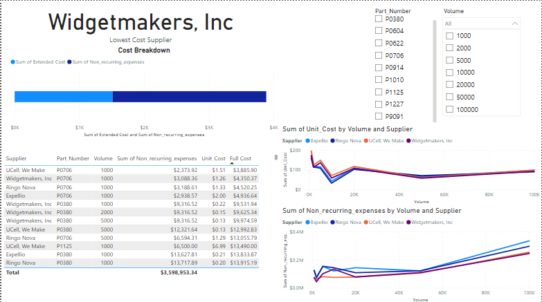
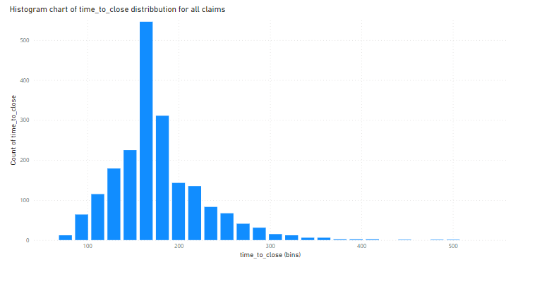

Product Sales Analysis [Python]

Analyzed sales data to determine the most effective sales approach for a newly launched product line
Video Game Analysis [Postgresql]

In this project, I explored the top 400 best-selling video games created between 1977 and 2020 to determine whether video games have improved as the gaming market has grown.
Analyzing Healthcare Data [PowerBI]
.png)
In this PowerBI Case study, I explored a real-world dataset to uncover hospital efficiency insights, I analyzed attributes impacting the patient's length of stay (LOS) and cost and worked to identify factors contributing to hospital differences.
Supply Chain Analytics Model [PowerBI]

In this case study, I created a Make vs Buy analysis tool to calculate costs and analyze production volumes
Data Cleaning and visualization
In Excel

Explored bike sales data in Microsoft Excel, performed data cleaning, created pivot tables and visualised the data to communicate insights.
Data Mining: Web Scrapping Projects [Python]

This is a repository of my web scraping projects. From scraping a cryptocurrency website to scrapping Wikipedia data.
Food Claims Analysis [PowerBI]

Analysed data for the legal team of a fictitious fast-food chain in Brazil with over 200 outlets, to provide insights to the legal team on how to improve how long it takes to reply to customers and close claims.
Data Cleaning in Microsoft SQL Server [SQL]

Transformed raw data in Microsoft SQL Server Management Studio (SSMS) to make it more usable for analysis.
COVID-19 Data Exploration In Microsoft SQL Server [SQL]

Explored global COVID-19 data using Microsoft SQL Server Management Studio (SSMS)